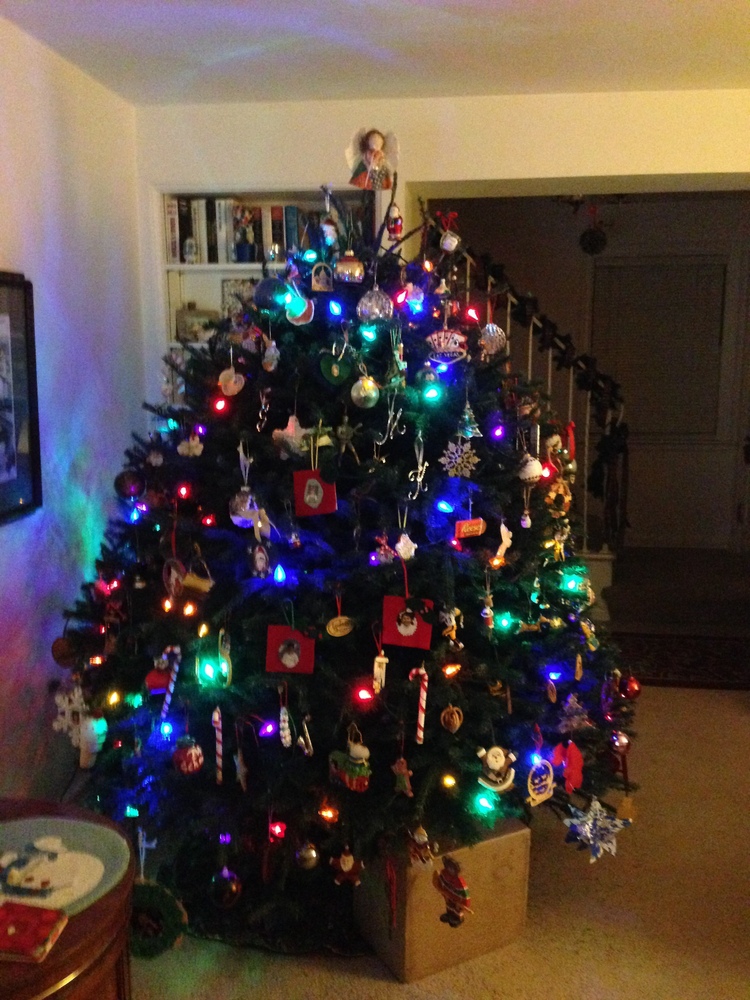
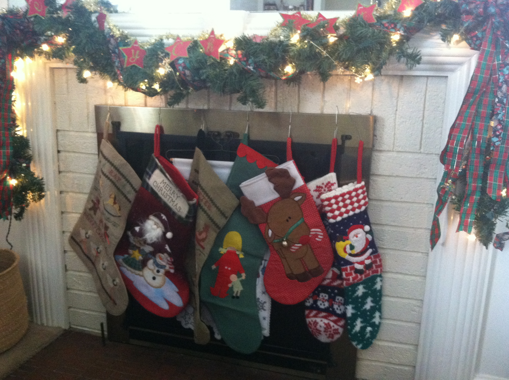
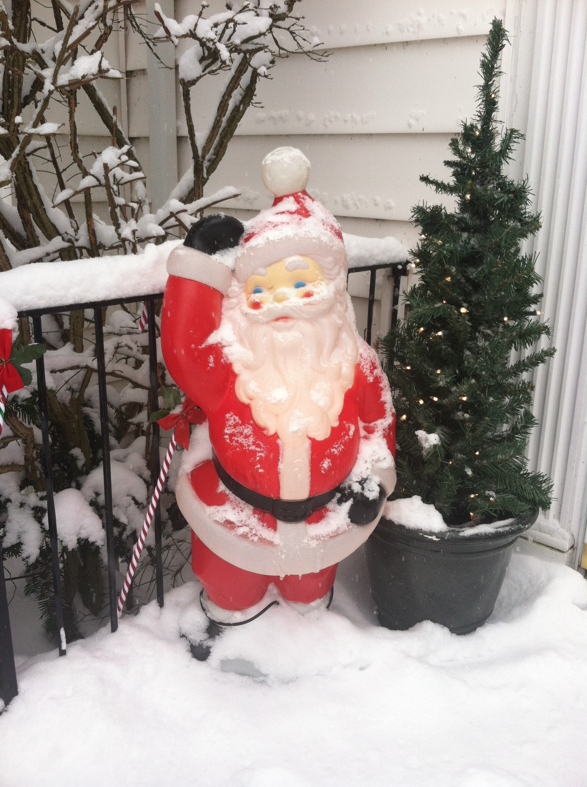

Indoor and outdoor decorations play a role in the Schmitt Family Christmas. We are Christmas traditionalists, though, and no decorations go up until after Thanksgiving and all of them come down on January 6th (because that is the feast of the Epiphany and the official end of the Christmas season.
Christmas Tree
This might just be the most important part of the decorations. We always have a real tree. There is nothing better than the scent of pine needles that pervades our downstairs (do not even get anyone in my family started on how “you can just get a scented candle since it smells the same” because we don't buy that argument). In the past we would go to farms and cut down our trees, but once we got older and busier we just started going to a lot where we can quickly find one and take it home. Usually my little sister gets the final choice after we check to make sure the base is straight (there was once an unfortunate incident where my mom picked a crooked tree and has yet to live it down). Once we bring it home, my mom is in charge of putting the lights on it and then we start decorating it with the ornaments. There is never a set theme for the tree because my mom likes to put all the ornaments we have on the tree. This includes every ornament my siblings and I made for her and my dad (and since we went to the same schools and had the same teachers there are several interpretations of the same ornament. She also buys each of us ornaments every year so that when we have our own trees, we will be able to decorate them. There are also ornaments that were at my grandparents house. In the end, our tree always ends up being packed full of various different ornaments.
Other Inside Decorations
While the tree is the focal point, there are many other decorations we put up every year to make the house look festive. There is the garland that is hung up the railings on the stairs, over the fireplace, and through the chandelier. There are the stockings that we each have since we were babies that we hang over the mantle until Christmas. We have a set of creepy Christmas elves that sit on our piano and stare at us and have freaked us all out since we were children. Then there are various knick–knacks that sit on basically every windowsill in our house (my mom works in a school and seems to acquire them by the dozen every year. They include Santas, reindeers, candy canes, snowflakes, and really any Christmas-themed thing. We also always put out all of our Christmas picture books, even though no one really reads them anymore. Our entire first floor is transformed with all the Christmas decorations, giving it a magical feel.
Outside Decorations
While we never reach Clark Griswald–level with our outdoor decorations, we do not slack off either. Some years my mom gets different ideas about the arrangements or colors of the lights, but the one constant is always our old–school light–up Santa we inherited from my grandpa. He stands to the side of our front door welcoming all the visitors to our house. We also always hang a giant wreath with lights from my brothers' window over the garage. There are always lights around the door and sometimes (if it fits the theme for the year) over the bushes. While our decorations are often simple, they end up looking very nice and welcoming, making it fun to come home at night during the Christmas season.